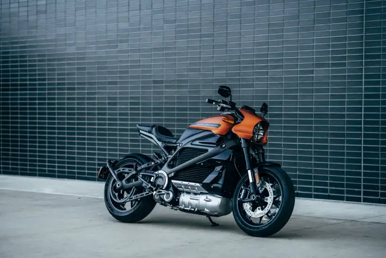
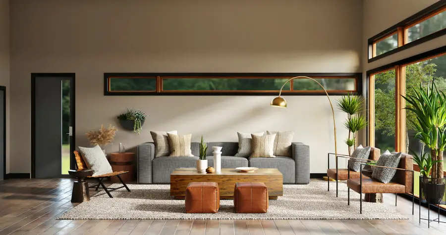

Single: Neonsummer
Two million streams in the first month.
Pop Singer · Portfolio
POP SINGER
Hooks that stick, bridges that lift, and a live show that outruns the record.
Selected work
Two million streams in the first month.
Opening six shows across the country.

A self-directed video shot in one take.
Four reimaginings with four producers.
Monthly acoustic livestreams from the studio.
A capsule collection designed with the artwork.

About
Hooks that stick, bridges that lift, and a live show that outruns the record.
Everything on this page is made to be scrolled slowly. The work below is the honest list — outcomes attached, fluff removed.
Currently
Focus — Top-line writing
Also — Melody craft
Based — Austin
Services
Hooks that stick, bridges that lift, and a live show that outruns the record. Top-line writing is where this shows up most — ask for examples on a call.
Hooks that stick, bridges that lift, and a live show that outruns the record. Melody craft is where this shows up most — ask for examples on a call.
Hooks that stick, bridges that lift, and a live show that outruns the record. Vocal production is where this shows up most — ask for examples on a call.
Hooks that stick, bridges that lift, and a live show that outruns the record. Choreography is where this shows up most — ask for examples on a call.
Hooks that stick, bridges that lift, and a live show that outruns the record. Socials & releases is where this shows up most — ask for examples on a call.
Hooks that stick, bridges that lift, and a live show that outruns the record. Touring is where this shows up most — ask for examples on a call.
Contact
guest@pop-singer-dark:~$ contact --init → name : Priya Marchetti → role : Pop Singer → email : hello@pop-singer-dark.io → response-time : within 24 hours guest@pop-singer-dark:~$ _
“Hooks that stick, bridges that lift, and a live show that outruns the record.”